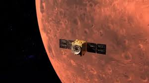
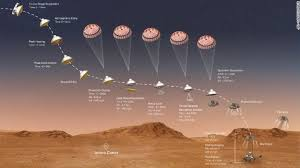

Mision Perseverance (2021) Exploracion de Marte

Objetivo y contexto historico
La mision Mars 2020, con el rover Perseverance, tiene como objetivo principal buscar signos de vida microbiana pasada en Marte y recolectar muestras de rocas y suelo para su posible retorno a la Tierra. Esta mision forma parte de los esfuerzos de la NASA por comprender la habitabilidad del planeta rojo y preparar futuras misiones humanas.
Caracteristicas del rover
Perseverance es un rover del tamano de un automovil, equipado con instrumentos cientificos avanzados para analizar la geologia y el clima marciano.
Incluye el helicoptero Ingenuity, que realizo los primeros vuelos controlados en otro planeta.
Desarrollo de la mision
Lanzado el 30 de julio de 2020, Perseverance aterrizo exitosamente en el crater Jezero el 18 de febrero de 2021. Desde entonces, ha estado explorando el terreno, recolectando muestras y realizando experimentos cientificos. Ha descubierto formaciones rocosas inusuales, como "Skull Hill", que proporcionan pistas sobre la historia geologica y volcanica de Marte. Ademas, ha recolectado multiples muestras, incluyendo una roca denominada "Silver Mountain", que sera enviada a la Tierra para analisis futuros .
Importancia cientifica
Los datos recopilados por Perseverance ayudaran a determinar si Marte alguna vez albergo vida y proporcionaran informacion crucial para futuras misiones humanas al planeta. Ademas, la mision está sentando las bases para la futura mision de retorno de muestras a la Tierra

Video sobre la mision
https://www.youtube.com/watch?v=cVO2q1lCEN4
REGRESAR